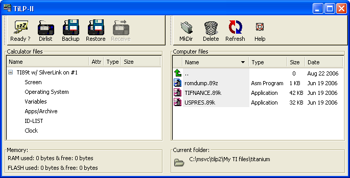

When you launch TiLP2 at once, you will see this :

In TiLP2, you will notice there is not any menu bar any more. All
operations/settings can be done by Drag & Drop or by popup menus
(right click on each view).
By default, the window is splitted into 2 parts :
- the local view
(right frame) : contains a toolbar (calculator related operations), a
tree and an information frame (current folder),
- the remote view (left frame) : contains a toolbar (computer related
operations), a
list and an information frame (memory used and/or free).
Any operation is based on the content of the
left or the right frame.
This is the same behaviour as TiLP.
2.2 Simplified GUI
TiLP2 adds a new GUI mode : it's possible to configure
TiLP2 to run with only the remote view as shown below :
Any operation is based on
the content of the
left frame only but file location is used from the right frame (working
folder).